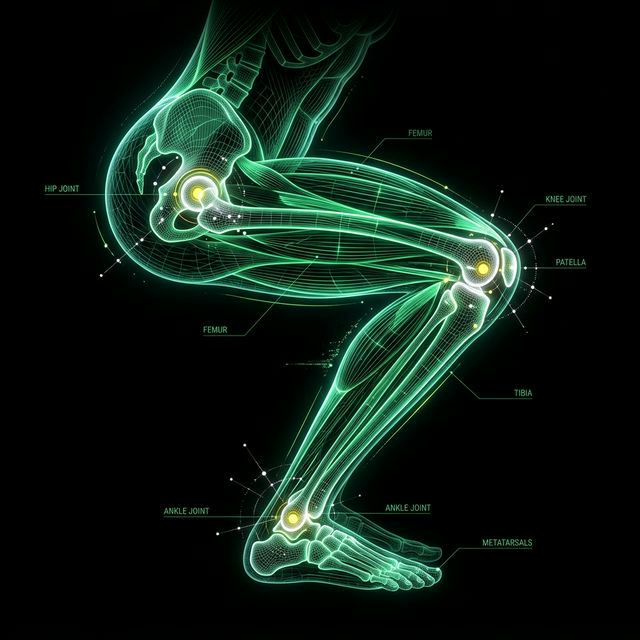

Bloco B: A Armadura Neuromotora
Baseado no protocolo FIFA 11+ Kids (redução cientificamente comprovada da incidência de lesões).
Centro de Gravidade
Equilíbrio e controle de movimento.
Tornozelo e Joelho
Estabilidade articular extrema.
Pés
Técnica otimizada de salto e aterrissagem.
